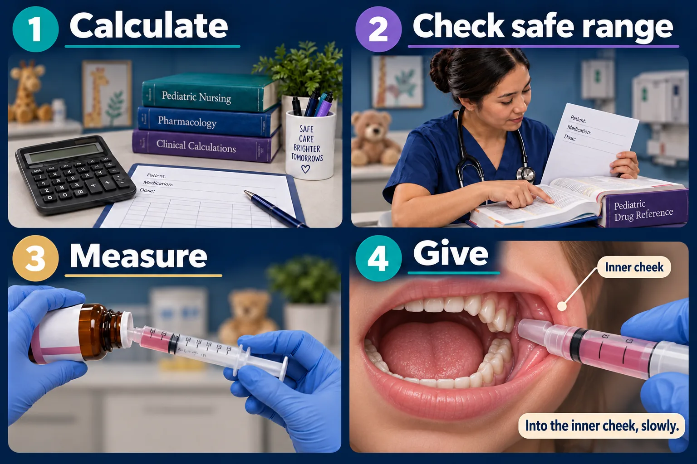

NUR 235 · Module 6 · Exam 2
Pediatric medication safety
Right child. Correct units. Safe technique. Use the order and an appropriate pediatric reference together.

Weight is not the dose
44 lb ≈ 20 kg
Entering 44 as kilograms makes this weight input about 2.2 times too large. A weight-based calculation can then be wrong.
Read the dose basis carefully: mg/kg/dose and mg/kg/day divided into doses mean different things. Some orders use other dosing methods.
Amount, concentration, volume
mg describes drug mass. mL describes liquid volume. The product concentration connects them.
Verify the prescribed amount, frequency, route, safe range and applicable maximum. Follow local requirements for independent checks, especially with high-alert medicines.
Small amounts, slowly
- Use an oral/enteral syringe marked in mL; avoid kitchen spoons.
- Keep the child upright. Direct small amounts toward the inner cheek and allow time to swallow.
- Do not squirt into the back of the throat. Check with the pharmacist before mixing medicine with food or drink.
Site by age, then assess
Your course: the vastus lateralis is the infant site. The deltoid is used once the child walks well and has enough muscle mass.
Side note (Codex): needle and volume are then chosen for this child, this medication and agency policy. Walking alone is not the whole test.
What your course teaches
This is the rule your study sheet (NG-359) and Module 1 use. Go with it on the exam.
| Route | Site | Max volume per site |
|---|---|---|
| IM · infant | Vastus lateralis | 0.5–1 mL |
| IM · toddler / child | Vastus lateralis; deltoid once walking well | 1–2 mL |
| IM · adolescent | Deltoid or ventrogluteal | 2–3 mL |
| Subcutaneous | Abdomen, thigh, upper arm | 0.5 mL |
The dorsogluteal site is not used in a child who is not yet walking: the muscle is undeveloped and the sciatic nerve is close.
Getting it into a small child
- Never call medicine candy, and never lie about the taste.
- Offer a choice about how, never about whether.
- Small amounts into the side of the cheek, slowly, not down the middle of the throat.
- Never mix it into a full bottle or a whole meal. If she stops halfway, you don’t know how much she had.
- Praise afterwards, every time.
High-alert medicines (insulin, opioids, chemotherapy, digoxin, anticoagulants) get an independent double-check by a second nurse.
Try it before you reveal it
The order says mg/kg/day in divided doses. Is the daily amount one dose?
No. It is the total for the day; the prescribed schedule determines how it is divided. Verify the order and calculation with the appropriate reference before administration.
A child starts walking. Does that automatically make the deltoid suitable?
Not by walking alone. Your course rule is the deltoid once the child walks well and has enough muscle mass. Until then, use the vastus lateralis. Check the volume against the table above too.
The label gives mg, but the syringe has mL. Are these interchangeable?
No. Mass and volume are different quantities. Verify the product concentration before determining the volume to measure.